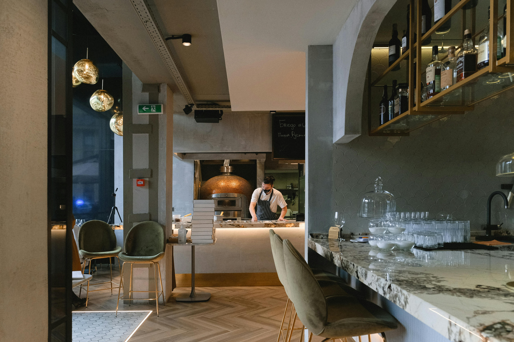
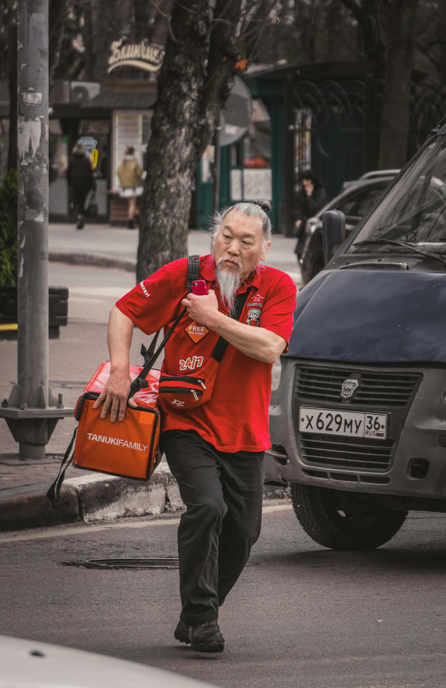
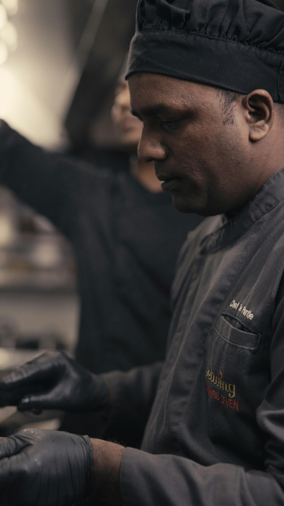

Что уже делает Forrest для ресторанов
Forrest уже уверенно закрывает путь гостя от выбора до оформления заказа: единая точка входа, цифровой клиентский опыт, удобные интерфейсы и фокус на скорости оформления.
Уважение к текущему ядру Forrest
Важно не подменять текущую ценность Forrest, а усиливать ее. Клиентский интерфейс и прием заказа уже выглядят зрелым продуктом для HoReCa — интеграция должна расширить продукт вниз по цепочке исполнения.
- Единая точка входа для заказов гостей.
- Цифровой клиентский опыт: доставка, QR-меню, планшеты, заказы из зала.
- Удобные интерфейсы для гостя и персонала.
- Фокус на скорости и удобстве оформления заказа.

Путь гостя до заказа уже оцифрован. Путь исполнения заказа — чаще всего нет.
Именно после оформления заказа ресторан начинает терять деньги: задачи распадаются между кухней, залом, курьерами и управлением, сотрудники работают не в одном контуре, а данные не превращаются в действие.
Из системы заказов в операционную платформу ресторана
Forrest остается сильным ядром клиентского интерфейса и приема заказа, а TMS берет на себя слой операционного исполнения: маршрутизацию, кухню, зал, доставку, смены и управленческую аналитику.
Для ресторана это должно ощущаться как одна бесшовная система, а не набор разрозненных модулей. Именно поэтому в дизайне лендинга все визуальные маршруты сходятся в единый контур, а не в отдельные продукты.
Три входа, один управляемый поток
Независимо от канала входа, дальше заказ попадает в общий операционный алгоритм и превращается в статусы, очереди, действия сотрудников и управленческую аналитику.
Онлайн-заказы на вынос и доставку сразу попадают на кухню, а алгоритм синхронизирует подготовку и вызов курьера.
Онлайн-каналГостевой цифровой заказ одновременно становится сигналом для кухни и зала, без ручной пересборки данных.
Гость в залеКлассический заказ за столом не выбивается из цифрового контура и попадает в тот же сценарий исполнения.
Офлайн в единой логикеГотовность заказа совпадает с приездом курьера
Заказ из Forrest автоматически поступает на кухню. Система понимает техкарты, дедлайны и приоритеты, а курьер вызывается ровно тогда, когда это выгодно сервису и ресторану.
Идеальное совпадение готовности и выдачи
Вместо ручного контроля из нескольких экранов появляется единая управляемая логика: сначала производство, затем сборка, затем вызов курьера точно к моменту готовности.
- Кухня получает заказ сразу после подтверждения.
- Алгоритм определяет, какие блюда запускать в работу первыми.
- Курьер вызывается заранее — без простоя у ресторана и без остывшей еды.
- Управляющий видит отклонения по скорости, сборке и выдаче.
Сразу передает состав заказа, адрес, дедлайн и все модификаторы в общий операционный контур.
Система учитывает время приготовления, собирает заказ синхронно и не дает смене распасться на хаос чеков.
Алгоритм вызывает курьера в нужный тайминг — так доставка становится быстрее и стабильнее по качеству.

Прозрачность для гостя, контроль для зала
Заказ из QR или планшета Forrest сразу становится видимым для кухни и официанта. Гость получает более предсказуемый сервис, а зал — управляемость в реальном времени.
Гость → официант → кухня
Цифровой заказ из зала не исчезает в «черном ящике» кухни. Он одновременно становится сигналом для кухни, официанта и системы контроля сервиса.
- Гость делает заказ через QR или планшет Forrest.
- Официант видит стол, пожелания гостя, статусы приготовления и ожидаемое время готовности.
- Кухня получает тот же управляемый заказ — уже с дедлайнами и приоритетами.
Классический зал — в едином цифровом контроле
Офлайн-заказ вносится через Forrest и дальше больше не живет отдельной жизнью. Он становится частью общего контура исполнения, где кухня, зал и управление синхронизированы по времени и статусам.
Заказ официанта больше не теряется между ролями
После ввода заказа в Forrest кухня работает по дедлайнам и приоритетам, официант видит готовность блюд, а управляющий получает сквозную картину сервиса по смене.
- Меньше человеческого фактора и внутренних уточнений между сотрудниками.
- Меньше ошибок в составе заказа и в очередности подачи.
- Меньше напряжения в смене за счет прозрачных статусов.
Официант фиксирует заказ через Forrest — стол, позиции, пожелания гостя, порядок подачи.
Кухня и зал получают единый источник правды по заказу, статусам, времени приготовления и подаче.
Стол не «теряется» в рутине: видно задержки, загрузку официанта и ожидаемое время готовности блюда.
Понятный план смены вместо хаоса чеков
Кухня получает не просто поток чеков, а рабочий экран управления производством: активные заказы, каналы, таймеры, дедлайны и приоритеты запуска в работу.
Суши-сет, мисо-суп, салат. Сборка синхронизируется под вызов курьера через 9 минут.
Паста, тартар, лимонад. Гость в зале — важно синхронизировать горячее и подачу официанту.
Стейк medium, овощи гриль, чай. Официант ждет сигнал по подаче, чтобы не держать гостя без статуса.
Пицца, салат, напитки. Низкий риск — запуск после завершения текущего приоритетного окна.

Кому подавать, что готово и где уже есть задержка
Работа официанта превращается из набора параллельных ручных действий в управляемую систему: столы, заказы, подача, таймеры и загрузка сотрудников видны в одном интерфейсе.
QR-заказ. Гость добавил пожелание по скорости подачи. Назначен официант Илья.
Заказ через официанта. Нужно вынести напитки до подачи основного блюда.
Кухня +3 минуты к целевому таймингу. Система рекомендует предупредить гостя.
Сборка завершена. Курьер прибудет через 2 минуты — подготовить зону выдачи.
Следующее действие: вынести стол 7 и предупредить стол 15 о корректировке времени.
Свободное окно — можно принять новый заказ или усилить подачу у столов с ожиданием.
Что выносить сейчас, где есть задержка, какой стол ждет, кого перегружает смена и где нужна помощь.
Зал начинает работать по прозрачным статусам, а не по устным уточнениям между кухней и официантами.
Одна панель для всей смены
Управляющий получает не набор разрозненных экранов, а единую картину ресторана: заказы по каналам, выручка, загрузка персонала, скорость обслуживания, чаевые и воронку исполнения заказа.
- 8 официантов, 3 курьера, 2 сборщика — загрузка видна в одной сменной панели.
- Чаевые, отзывы и скорость обслуживания дополняют картину экономики смены.
- Отклонения по сервису сразу связываются с реальной операционной причиной.
От наблюдения к управлению
Система не только показывает, что произошло, но и помогает управлять тем, что произойдет дальше: прогнозирует перегруз, рекомендует графики смен и подсказывает, как сокращать операционные потери без потери уровня сервиса.
Кухня и зал одновременно входят в пик. Система рекомендует заранее перестроить очередность подачи и усилить сборку доставки.
Система помогает управлять будущим состоянием смены
Интеллектуальный слой стоит не «сбоку», а поверх операционного контура: прогноз строится на фактических потоках заказа, роли сотрудников и скорости исполнения по каждому каналу.
- Анализ загруженности по часам, дням и сезонам.
- Рекомендованные графики смен на основе фактического потока заказов.
- Прогноз перегруза кухни и зала до возникновения проблемы.
- Подсказки по сокращению ФОТ без потери уровня сервиса.
- Рекомендации остаются управляемыми — их можно принять, скорректировать или отклонить.
Блок можно усилить после пилота фактическими метриками: экономия ФОТ, снижение ошибок, ускорение выдачи и рост операционной эффективности.
Ресторан получает не просто автоматизацию, а измеримый экономический эффект
В финальной презентации здесь можно будет добавить конкретные метрики пилота. Пока блок собран как сильный каркас смыслов: сервис, операционная эффективность и экономика.
Смена управляется по реальному потоку заказов, а не по субъективной оценке загрузки.
Метрика добавляется после пилотаОдин заказ становится единым источником статусов и задач для кухни, зала и доставки.
Метрика добавляется после пилотаПриоритетная логика и синхронизация ролей сокращают задержки на выдаче и в зале.
Метрика добавляется после пилотаГость получает более предсказуемый сервис и меньше точек разочарования после заказа.
Метрика добавляется после пилотаОперационные потери снижаются, а управленческие решения опираются на реальную картину смены.
Метрика добавляется после пилотаИз «системы заказов» — в полноценную операционную платформу ресторана
Главный вопрос Forrest — зачем это бизнесу и продукту. Ответ: новая глубина продукта, выше retention, выше LTV и сильнее основание для масштабирования в сети и крупные рестораны.
Сильный продукт вокруг клиентского заказа: цифровой вход, удобный интерфейс, скорость оформления, сценарии доставки и зала.
- Фокус на заказе и клиентском пути.
- Высокая понятность для ресторана и гостя.
- Сильный product-market fit в клиентском слое.
Операционный слой TMS делает продукт глубже: заказ, кухня, зал, доставка, персонал, смены, аналитика и AI собираются в одну платформенную логику.
- Рост продуктовой ценности и удержания.
- Premium-offer: заказ + персонал + аналитика.
- Больше оснований для масштабирования в сети и крупные рестораны.
Технически реалистично, продуктово бесшовно
Forrest остается ядром клиентского заказа и пользовательских интерфейсов. TMS подключается по API, забирает события заказов, обрабатывает маршрутизацию и возвращает статусы и аналитику в общую админ-панель.
Маршрутизация, приоритеты, тайминги, роли персонала, управленческий слой и аналитика.
Поэтапный запуск интеграции — без лишней тревожности для продукта и команды
Интеграцию можно запускать постепенно: от discovery и проектирования до MVP, пилота и масштабирования на новые точки и сети. Такой путь выглядит реалистично как для продукта, так и для технической команды.
Уточнение сценариев, ролей, состава данных, статусов и API-границ между системами.
Архитектура интеграции, схема обмена событиями, логика статусов и приоритетов.
Запуск базового сценария на одной точке: заказ, кухня, зал и первичный управленческий экран.
Проверка на живой смене, сбор фактических метрик и доработка сценариев на реальном потоке.
Упаковка решения как платформенного предложения и тиражирование на новые точки и сети.
Давайте соберем операционную платформу для ресторанов вместе
Forrest уже отлично закрывает путь клиента до заказа. Интеграция с TMS закрывает путь исполнения: кухня, зал, курьеры, персонал, аналитика и экономика смены. Вместе это формирует полноценную систему управления рестораном.
Следующий шаг: рабочая встреча по архитектуре, API и формату пилотного запуска.